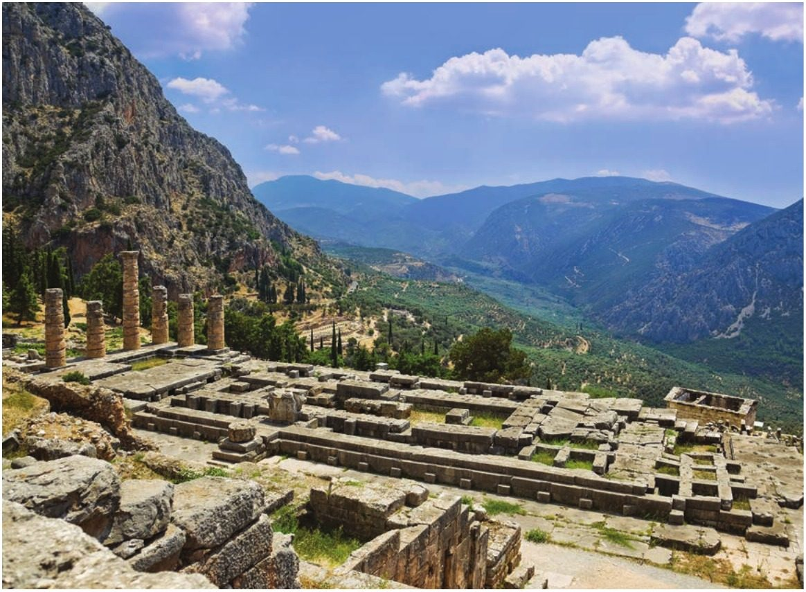
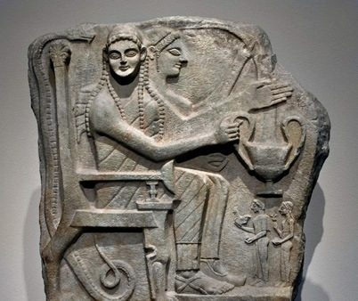
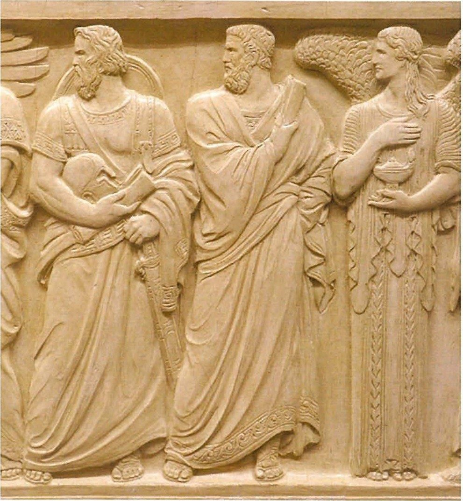
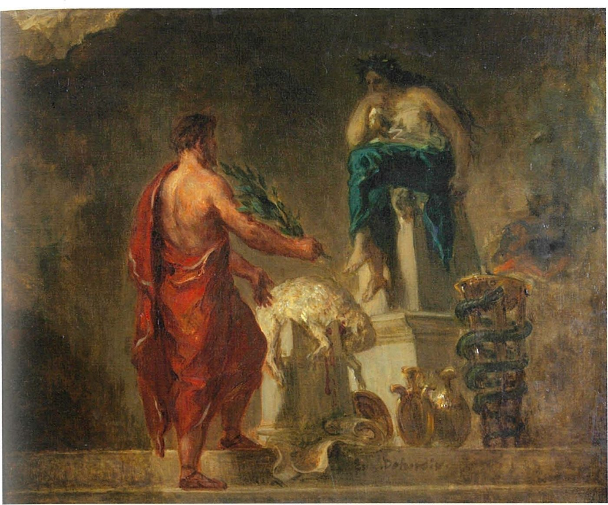

Spartan society to the Battle of Leuctra 371 BC · Lesson 3
Lycurgus and the Great Rhetra
What did Sparta’s founding law set up — and can we trust the story the Spartans told about the man who gave it to them?
Year 12 Ancient History · Section II, Option G · Present with → or space · Read on a phone with R

Spaced review · 4 minutes · from memory, no notes
Five questions
- 1Name the mountain range west of Sparta.Lesson 2
- 2What was Gytheion?Lesson 2
- 3Give the dates of Thucydides.Lesson 1
- 4Name the three groups of people who lived in Laconia.Lessons 1–2
- 5Predict: geron means “old man”. What might the gerousia be?Today’s first new term
- Taygetus
- Sparta’s port and naval base on the Laconian Gulf — a perioikic town
- c. 460 – c. 400 BC
- Spartiates, perioikoi and helots
- A council of elders — today you will meet it in Sparta’s founding law
Learning intentions and success criteria · 2 minutes
Today’s goals
- explain what the Great Rhetra was, what it set up and why it mattered
- explain what Lycurgus was believed to have done, and evaluate the evidence that he was a real lawgiver
- annotate a source using OVPRL in our own words
- state in two or three sentences what the Great Rhetra was and what the tradition says Lycurgus did
- explain what each clause of the Great Rhetra, including the rider, set up
- compare what Herodotus, Plutarch, Tyrtaeus and Thucydides say about who created Sparta’s constitution
- explain why the Great Rhetra and the Lycurgus legend mattered to Sparta
A rhetra is a spoken pronouncement or law. Apella is the Rhetra’s word for the citizens’ meeting; strictly it was Apollo’s festival on assembly day. Call the assembly itself the ekklesia.
Note-making · today’s routine
How to structure your notes
questions and key terms
short phrases, arrows (→ led to), abbreviations (L. = Lycurgus)
- 1Listen and look firstDon’t copy while the slide is being explained.
- 2Write your own notes at each ✎ checkpointPhrases, not sentences. Arrows for cause and effect.
- 3Compare with the model notesThey appear one row at a time. Add what you missed in a second colour.
- 4Copy each cue question into the left columnLater, cover your notes and answer the cue questions from memory.
- 5Finish with a three-sentence summaryFive checkpoints: the basics · Herodotus’ story · the Great Rhetra · the issue of Lycurgus · why it mattered.
Key vocabulary
Words you will use today
| The law | Meaning |
|---|---|
| constitution | the basic rules for how a state is governed: who holds power and how decisions are made |
| Great Rhetra | the short, oracle-style text, preserved by Plutarch, that set out Sparta’s constitution |
| archagetai | “founder-leaders”: Plutarch says this was the old name for the two kings |
| gerousia | the council of elders: 28 men over sixty plus the two kings |
| Apella · ekklesia | the Rhetra’s word for the citizens’ meeting · the usual name for the assembly |
| damos | the people: the full citizens who attended the assembly |
| rider | an extra clause added to a law after it was first made |
| The legend | Meaning |
|---|---|
| lawgiver | a person believed to have created a city’s laws |
| eunomia | good order or good government; its opposite is anomia |
| oracle · Pythia | a god’s message, or the shrine that gave it · Apollo’s priestess at Delphi |
| hero cult | worship of a remarkable dead person, usually at a tomb or shrine |
| argument from silence | a conclusion drawn from what a source does not say |
| Spartan mirage | the idealised, partly invented picture of Sparta (Lesson 1) |
Spelling: Cooley’s translations use Greek forms (Lykourgos, Tyrtaios, Phoibos, Theopompos). In your own writing use Lycurgus, Tyrtaeus, Phoebus, Theopompus.
1 · The basics · I do — the big picture before the sources
Three things to be able to say plainly
A short pronouncement, framed as an oracle from Delphi, that set out how Sparta was governed: the kings and elders proposed, a citizen assembly decided. Our text comes from Plutarch (c. AD 100), but it was probably in place by about 700 BC.
Spartans and later Greeks believed he was the lawgiver who designed Sparta’s whole way of life, with Apollo’s approval. Plutarch says he obtained the Rhetra as an oracle — yet the Rhetra itself never names him.
The Rhetra is probably a genuine early document. Whether Lycurgus created it — or even existed — is much less certain.
The Rhetra decided who held power in Sparta. The legend gave those laws a god’s approval and made them seem ancient and unchangeable.
1 · The basics · today’s inquiry
What the tradition says — and what the evidence suggests
| What the tradition says | What the evidence suggests |
|---|---|
| Lycurgus got Sparta’s laws from Delphi (or brought them from Crete). | Tyrtaeus, our oldest witness, credits Apollo and the kings, and never names Lycurgus. |
| He created the whole system at once, including the gerousia and the ephorate. | The Rhetra never mentions ephors; Plutarch dates the first ephors about 130 years after Lycurgus. |
| He was regent for King Leobotas, perhaps c. 870–840 BC. | Ancient dates for him range over centuries; the Rhetra was probably in place by about 700 BC. |
Each row is tested by a source today. By the end, decide: legend, real man — or something in between?
Notes checkpoint 1 of 5
The basics
Write your own notes first. Then compare, row by row, and add what you missed in a second colour.
2 · The story the Spartans told · We do — read together
Herodotus: how Sparta got good government
[65.2] In still earlier times they had probably been the worst governed of almost all the Greek states … But they now enjoyed excellent government and I shall explain how this came about. A very distinguished Spartiate called Lykourgos went to Delphi to consult the oracle. … [65.4] Some sources state, in addition, that the Pythia outlined for him the current system of government for the Spartiates; but the Lakedaimonians themselves say that Lykourgos brought these ideas back from Crete when he became the guardian of his nephew Leobotas, who was king of the Spartiates. [65.5] In fact, as soon as he became his guardian and regent, he changed the whole constitution and firmly enforced the new laws. He then reorganised the army, establishing the system of sworn comrades, operating in thirty-man units, and eating together in their own messes. Lykourgos was also responsible for the institution of the ephorate and the gerousia. [66.1] These changes were responsible for the excellent system of government, and when Lykourgos died they put up a temple to him and greatly honoured his memory.
Herodotus, Histories 1.65.2–66.1 (part) · written c. 430s–420s BC · trans. B. Wilson · Cooley F3
Where did the laws come from?
Two versions: the Pythia at Delphi — or Crete, the version the Spartans themselves told. The story was already contested in the 5th century BC.
What does he credit to Lycurgus?
Almost everything: the army’s units and messes, the gerousia — even the ephorate.
How does the story end?
In worship: a temple. The oracle he quotes was unsure whether to call Lycurgus “hero or god”.
2 · The story the Spartans told · I do — modelling an annotation
Annotating a source: short, specific, your own words
| Code | Model margin note |
|---|---|
| O | Hdt, 430s–420s BC; not a Spartan; c. 400 yrs after L.’s supposed date |
| V | earliest full account; credits L. with army units, messes, ephors, gerousia |
| P | explains how Sparta got eunomia (good government) |
| R | gives 2 versions (Delphi / Crete) and says so |
| L | oral tradition; no contemporary witness; no date of his own |
- Abbreviations: Hdt, L., yrs
- One idea per code
- Specific to this source — nothing that fits every source
Watch the model, then write your own version in the margin of your copy. Copying this table word for word is not annotating.
Notes checkpoint 2 of 5
The story the Spartans told
3 · The Great Rhetra · We do — clause by clause
The Great Rhetra
[6.1] Lykourgos was so enthusiastic about his new ruling council that he even got an oracle about it from Delphi. It is known as a rhetra, and it goes as follows:
Set up a temple to Zeus Sullanios and Athena Sullania;
Tribe the tribes and obe the obes;
Set up a gerousia of thirty, with the founder-leaders (archagetai);
From time to time, have an Apella between <the streams of> Babyka and Knakion;
Thus to propose and rescind;
For the people, decision and power.
Plutarch, Life of Lykourgos 6.1 · written c. AD 100 · trans. B. Wilson · Cooley D48
Who does Plutarch say obtained it — and from where?
Lycurgus, from Delphi. This is the link between the man and the law — but it is Plutarch’s claim. The six clauses themselves never name Lycurgus.
Plutarch: “Lykourgos called these ordinances rhetrai to give the impression that they were oracles and came from the god.” (Lykourgos 13, Cooley D49)
3 · The Great Rhetra · We do — think, pair, share
What did each clause set up?
| Clause | What it set up |
|---|---|
| “Set up a temple to Zeus Sullanios and Athena Sullania” | A religious foundation: the constitution begins with the gods (the titles’ meaning is uncertain). |
| “Tribe the tribes and obe the obes” | Citizens organised into tribes (phylai) and smaller groups (obai). How obes worked is uncertain. |
| “Set up a gerousia of thirty, with the founder-leaders (archagetai)” | A council of thirty: 28 elders + the 2 kings. |
| “From time to time, have an Apella” | Regular meetings of the citizens at a fixed place — the assembly (ekklesia). |
| “Thus to propose and rescind” | The kings and elders bring proposals — and can withdraw them. |
| “For the people, decision and power” | The citizens have the final say on what is put to them. |
3 · The Great Rhetra · I do — the whole system
How the Rhetra worked
- 1A gerousia of thirty28 elders and the 2 kings — the “founder-leaders”.
- 2They propose“Thus to propose and rescind.”
- 3The assembly decides“For the people, decision and power” — but only yes or no. Plutarch: “no one was allowed to table a proposal”.
- 4The riderA “crooked” decision could be undone — next slide.
In short: a three-part constitution of kings, elders and people. The kings and elders controlled what was proposed; the people had the final say, but only on what was put to them.
3 · The Great Rhetra · We do — the rider
The rider: who gained power?
[4] But in time the people managed to distort and mangle his intentions by passing amendments or deletions. So Polydoros and Theopompos, the kings, added the following rider to the rhetra.
But if the people shall adopt a crooked proposal, the elders and founder-leaders shall have the power of dissolution.
Plutarch, Life of Lykourgos 6.4 · trans. B. Wilson · Cooley D48
Who gained power? Who lost it?
The kings and elders. They decided what counted as “crooked”, and could dissolve the assembly.
The people. They could still say yes or no, but could no longer rewrite what they were given.
Plutarch presents the rider as a later correction, but Cooley notes that “it’s now generally agreed that the ‘rider’ is part of the original document.” If so, the people’s power was limited from the beginning.
3 · The Great Rhetra · Check for understanding If time
Which office is missing from the Rhetra?
This diagram shows Sparta’s government in the Classical period. Which part does the Rhetra never mention?
The five ephors — the powerful annual officials of classical Sparta (Lesson 5).
Herodotus credits Lycurgus with the ephorate, yet Plutarch dates the first ephors “Roughly some 130 years after Lykourgos”, in the reign of King Theopompus (Lykourgos 7, Cooley D17).
The sources cannot all be right. Lycurgus seems to have been credited with institutions that appeared at different times.
3 · The Great Rhetra · I do — reasoning from the evidence
When was the Rhetra made?
- 1The rider names two kingsPolydorus (Agiad house) and Theopompus (Eurypontid house) — one from each royal family (Pausanias’ king lists, Cooley E3–E4).
- 2Tyrtaeus dates TheopompusHe is the king “Through whom we captured spacious Messene” (fr. 5, Cooley A5).
- 3Messenia was conquered c. 735–715 BCCooley’s date for the conquest.
- 4So the Rhetra was in place by about 700 BCIf the rider was original, the whole Rhetra may belong to these kings’ reigns.
That leaves little room for a Lycurgus living centuries earlier — a reasoned possibility, not a proven fact. This is the kind of argument that earns marks.
Cooley: “The language of the rhetra is obscure and archaic, resulting in further corruption of the text.” Puzzling old wording is hard to invent, so most scholars accept it as a real early document.
Notes checkpoint 3 of 5
The Great Rhetra
4 · The issue of Lycurgus · We do — match the two sources
Tyrtaeus: the oldest witness
Having listened to Phoibos, they brought home from Delphi
God’s oracles with their verses of certainty;
The leaders in counsel are the kings, honoured of the gods,
For they look after the lovely city of Sparta,
Together with the eldest-born; and after them the men of the People,
Responding in their turn with straight ordinances
Are to say the right things and do everything justly
And not give the city any crooked counsel,
And so victory and power go with the mass of the People.
This was the revelation of Phoibos to the city on these matters.
Tyrtaios, fragment 4 (quoted by Plutarch and Diodoros) · trans. K. Hughes · Cooley A4
Lykourgos … even got an oracle about it from Delphi. …
Set up a temple to Zeus Sullanios and Athena Sullania;
Tribe the tribes and obe the obes;
Set up a gerousia of thirty, with the founder-leaders (archagetai);
From time to time, have an Apella between <the streams of> Babyka and Knakion;
Thus to propose and rescind;
For the people, decision and power.
… But if the people shall adopt a crooked proposal, the elders and founder-leaders shall have the power of dissolution.
Plutarch, Life of Lykourgos 6 · Cooley D48
- the kings
- the elders
- the people decide
- “crooked”
- from Delphi
Two writers some 750 years apart preserve the same three-part constitution — strong evidence that the Rhetra is genuinely early.
4 · The issue of Lycurgus · We do — the argument from silence
Who does Tyrtaeus credit — and who is missing?
Apollo (Phoebus) at Delphi, and the kings.
Lycurgus. Cooley: “Tyrtaios, at any rate, does not mention Lykourgos at all.”
We have only a few fragments of Tyrtaeus, so his silence could be chance.
This fragment is precisely about the early laws, and later writers who valued Tyrtaeus probably quoted his most informative passages.
“Even this early version looks like an attempt to legitimise the outcomes of a political process by presenting the constitution as divinely inspired.”
4 · The issue of Lycurgus · two more witnesses
A careful historian, and an honest biographer
Lakedaimon itself, after being founded by the Dorians who now live there, had suffered internal strife for the greatest period we know about, but nevertheless had also had a system of law and order since very ancient times and had never been ruled by tyrants. For four hundred years and more, until the end of the Peloponnesian War, the Lakedaimonians have had the same constitution, through which they have been able to bring about change in other states.
Thucydides, History of the Peloponnesian War 1.18.1 (part) · an Athenian, writing after 404 BC · trans. B. Wilson · Cooley F4
Counting back from 404 BC points to about 800 BC or earlier — yet Thucydides never names Lycurgus. Cooley suggests he counted generations of kings.
[1] There is a general lack of agreement about the life of Lykourgos, the lawgiver, both in its broad perspective and its particulars, since accounts vary about his origins, travels, and death. … Timaios suggests that there were two Lykourgoses in Sparta at very different periods, and that their joint achievements were credited to one of them because of his legendary status; …
Plutarch, Life of Lykourgos 1.1–2 (part) · written c. AD 100 · trans. B. Wilson · Cooley F2
Even Lycurgus’ own biographer opens by admitting the problem. Timaeus’ two Lycurguses is itself a guess to explain the confusion.
4 · The issue of Lycurgus · I do — the evidence in time
Who names Lycurgus — and when?
4 · The issue of Lycurgus · the dates If time
The ancient writers cannot agree when he lived
| Writer | When did Lycurgus live? |
|---|---|
| Herodotus | Guardian of King Leobotas (Cooley: c. 870–840 BC, tentatively) |
| Thucydides | Not named; the constitution unchanged for over 400 years before 404 BC |
| Xenophon | “in the days of the Heraklids, the sons of Herakles” (Cooley F1) |
| Aristotle (in Plutarch) | At the time of Iphitos, with whom he set up the Olympic truce — evidence: an inscribed discus at Olympia |
| Eratosthenes and Apollodorus (in Plutarch) | Well before the first Olympiad of 776 BC |
| Timaeus (in Plutarch) | Two men called Lycurgus, at different times |
4 · The issue of Lycurgus · weighing the case
Did Lycurgus exist?
- Herodotus, Xenophon, Aristotle and Plutarch all believed in him, and Sparta worshipped him at a temple.
- The Rhetra is a genuine early document, so someone framed it.
- The two earliest witnesses to the constitution, Tyrtaeus and Thucydides, do not name him.
- Ancient dates for him range over centuries.
- He is credited with institutions that appeared at different times, such as the ephorate.
- His name: Cooley translates it “Wolf-worker”; Cartledge notes it “comes close to some epithets of Apollo” — the god at the heart of the story.
Cooley concludes that “it is best to consider him a mythical figure”: even if a real man had some part in the early laws, “we have no means of disentangling the legends that grew around him to get an idea of one man’s achievements.”
Check for understanding · gesture vote
“Lycurgus was a real person.”
Agree
Unsure
Disagree
Be ready to justify your vote with a named source: Herodotus, Plutarch, Tyrtaeus or Thucydides.
4 · The issue of Lycurgus · You do · 16 minutes · press K for the timer
Your turn: annotate, then judge
- O — why is a poet living in 7th-century Sparta such rare evidence?
- V — which lines refer to the kings, the elders and the assembly?
- P — why present the constitution as Apollo’s revelation?
- R — the text is stitched from two later writers: what might be lost?
- L — who does Tyrtaeus credit, and who is missing?
Short notes in your own words, in the margin of your copy.
Lycurgus may not have existed, because , but , so .
Lycurgus may not have existed, because Tyrtaeus, our only witness from archaic Sparta, credits Apollo and the kings and never names him, but most later writers believed in him and Sparta worshipped him, so it is safest to treat him as a legendary founder whose story explains Sparta’s laws rather than as a proven historical person.
Notes checkpoint 4 of 5
The issue of Lycurgus
5 · Why it mattered · myths and legends: the hero cult
Real or not, Lycurgus was worshipped

In fact he has a temple there, and annual sacrifices to him as if he was a god. … There is a legend, too, that when they brought his remains back home, his tomb was struck by lightning.
Plutarch, Life of Lykourgos 31 · trans. B. Wilson · Cooley F7
Cooley, drawing on Burkert: a “deceased person who exerts from his grave a power for good or evil and who demands appropriate honour”.
Large enthroned figures, small worshippers bringing gifts, and a snake — which Cooley notes “suggests a heroized person”. It does not show Lycurgus, but it shows how Laconians pictured the honoured dead.
So what? Making Lycurgus a hero placed the founder of the laws among the city’s protectors.
5 · Why it mattered · I do — keep the law and the legend apart
Why the Rhetra and the legend mattered
- set up Sparta’s government — the kings, gerousia and assembly of Lessons 4 and 5
- limited the people’s power — a vote, but only on proposals put to them; the rider let kings and elders dissolve the assembly
- was linked to good order and stability — Herodotus: from badly governed to “excellent government”; Thucydides: the same constitution “four hundred years and more”
- was admired as balanced — Plutarch praises “such a mixed and balanced form of government”
- gave the laws divine authority — Xenophon: disobeying laws “sanctioned by the Pythian oracle” was blasphemous as well as illegal
- made a hero to honour — a temple and annual sacrifices
- made the system seem unchangeable — Cooley: it let Spartans “think of their own way of life as constant and ancestral, while discouraging any calls for radical reform or change”
- kept growing — later Spartans called new customs “Lycurgan”
Linking the two: the Rhetra gave Sparta its political structure; the legend gave that structure a single, sacred and unchanging origin.
5 · Why it mattered · the legend lives on
Evidence of the mirage — not of the man


Why are these images evidence for the Spartan mirage rather than for Lycurgus?
They are modern: a 20th-century lawcourt and a 19th-century painter still used Lycurgus as the model lawgiver. In Cooley’s words, “Lykourgos came to be a symbol for all things Spartan, both in Sparta and abroad.”
Not just “spin”: Cooley warns that “Such a process of myth-making should not be dismissed as cynical ‘spin’”. The legend was “a dynamic set of stories that developed and grew in the telling”.
Pausanias even credits Lycurgus with the Roman-era whipping at the altar of Artemis Orthia — which Cooley calls “an entirely specious justification” (Lesson 9).
Notes checkpoint 5 of 5
Why the Rhetra and the legend mattered
Finish your notes
Summary: three sentences
- What was the Great Rhetra, and what did it set up?
- What did Spartans believe Lycurgus did — and what is the issue?
- Why did the Rhetra and the legend matter?
The Great Rhetra was an early, oracle-style statement of Sparta’s constitution, preserved by Plutarch, which made the two kings and the elders of the gerousia responsible for proposals and gave a citizen assembly the final say, limited by the rider. Spartans believed Lycurgus had created this and their whole way of life with Apollo’s approval, but the earliest evidence never names him and ancient dates for him clash, so many historians treat him as a legend. Either way, the Rhetra decided who held power, and the legend gave Sparta’s laws a sacred, unchanging authority that discouraged reform.
6 · Answering HSC questions
This lesson has been examined twice
25 marks, about 45 minutes — about 1.8 minutes a mark. 6 marks ≈ 11 minutes; 7 marks ≈ 12–13 minutes.
NESA: “Relate cause and effect. Make the relationships between things evident. Provide why and/or how.”
Not what something was, but what it did — its effects on Spartan society in this period.
Question 1 (2024): we take NESA’s own sample answer apart. Question 2 (2021): we plan together, you write, then compare with an annotated model.
HSC 2024 · Section II · Question 11 (c) · 6 marks
Explain the importance of myths and legends for Spartan society during this period.
Question 1 · I do — watch how the question is taken apart, then how NESA’s full-mark sample is built.
HSC 2024 Q11(c) · I do — deconstruct the question
What the question is really asking
Cause and effect: each myth → what it did for Spartan society. A retelling of the story earns little.
More than one: Lycurgus, the Dioscuri (the twin heroes linked to the two kings), the Trojan War heroes Menelaus and Helen.
Effects on Spartans — identity, government, values — from the Archaic period to 371 BC.
About 11 minutes · three myths or legends, each tied to an effect · about 130–200 words · no long introduction.
HSC 2024 Q11(c) · the marking guidelines and the markers’ feedback
What the markers rewarded
| Marks | Criteria |
|---|---|
| 6 | Provides a detailed and informed explanation of features relevant to the question · Communicates effectively using appropriate terms and concepts |
| 4–5 | Provides an informed explanation of features relevant to the question · Communicates using appropriate terms and concepts |
| 2–3 | Provides some information about features relevant to the question · May use some appropriate terms and/or concepts |
| 1 | Makes a general statement(s) relevant to the question |
focus on the importance of myths and legends rather than describing them (c)use appropriate historical terms and concepts (b,c,d)
providing an explanation of the importance of more than one myth or legend to society (c)focusing on the specific wording of the question(s) to explain rather than describe (b,c)
Source: NESA, 2024 HSC Ancient History Marking Guidelines (Section II, part (c)) and the 2024 marking feedback for Question 11.
HSC 2024 Q11(c) · I do — NESA’s sample answer, annotated
A 6-mark explanation in 133 words
Sample answer from the NESA 2024 HSC Ancient History Marking Guidelines · 133 words
Marker’s margin
Even sharper: Plutarch says Lycurgus obtained the Rhetra as an oracle from Delphi (the sample says “oration”), and naming the evidence for the Dioscuri — Herodotus and a dedicated relief — would make sentence 6 “detailed”.
HSC 2024 Q11(c) · the evidence behind sentences 6 and 7
The Dioscuri and the two kings

… a law was made at Sparta that both kings were not allowed to follow an army when it went abroad: previously they had both done so. One of them would be released from the army, and one of the Tyndaridai would also be left behind: previously (images of) both of these special helpers would follow the army.
Herodotus, Histories 5.75.2 · trans. B. Wilson · Cooley D6
Plestiadas d[edicated] me to the Dioskouroi, a statue of the twin sons of Tyndareos, dreading their wrath.
Relief stele to the Tyndaridai · trans. in Cooley C28
The Dioscuri (Castor and Pollux) were twin heroes whose mortal father, Tyndareus, was a king of Sparta. Twin heroes went to war with the two kings: a divine model for Sparta’s unusual dual kingship. (Sentence 7’s Menelaion: Lesson 2.)
HSC 2024 Q11(c) · three answers that fall short
Why answers drop marks
Lycurgus went to Delphi, where the priestess said he might be a god. He brought back the Great Rhetra, which set up the gerousia and the assembly. When he died the Spartans built him a temple.
Accurate, but it describes one myth and never says what it did for Spartan society — the markers wanted importance “rather than describing them”.
The Lycurgus legend was important because presenting the laws as an oracle from Apollo made them sacred, so Spartans obeyed them and resisted change for centuries …
A real explanation — but of one legend. The markers asked for “more than one myth or legend”.
Myths were very important to Sparta, such as the Karneia, the Hyakinthia and the Gymnopaidiai, where Spartans honoured Apollo with songs and dances.
These are festivals, not myths or legends — a different dot point. Read the key term exactly.
Written for this lesson to show the marking criteria — not real student answers.
HSC 2021 · Section II · Question 11 (c) · 7 marks
Explain the importance of Lycurgus and the Great Rhetra in this period.
Question 2 · We do, then you do — plan it together, write it yourself, then compare with an annotated model.
HSC 2021 Q11(c) · We do — deconstruct together
What does this question want?
Why and how they mattered — causes and effects, not a retelling.
Both: the law (what it set up and did) and the man (what he was credited with — and whether he existed).
Their effects on Sparta down to 371 BC: government, stability, obedience, the hero cult.
| Marks | Criteria (2021) |
|---|---|
| 6–7 | Presents a well-developed and detailed explanation relevant to the question · Communicates ideas and information coherently, using appropriate historical terms and concepts |
| 4–5 | Presents clear explanation relevant to the question · Communicates ideas and information clearly, using appropriate historical terms and concepts |
| 2–3 | Presents some information relevant to the question · Communicates ideas using some historical terms and/or concepts |
| 1 | Makes general statement(s) relevant to the question |
Better responses could highlight the importance of Lycurgus in relation to his role as a lawgiver and reformer and the debate about his existence (c)use specific examples of reforms attributed to Lycurgus and the Great Rhetra (c)Students needed to improve by sustaining a coherent line of explanation (c)
HSC 2021 Q11(c) · NESA’s “answers could include”
What the marking guidelines listed
Lycurgus viewed as national hero and founding figure of Spartan culture and society.He is accredited with setting up the constitution (Rhetra), social structure, educational system and militaristic structures (Plutarch).The Rhetra defined what it was to be Spartan – the social structure, syssitia and agoge all defined Spartiate vs non-Spartiate, creating an exclusive society.Lycurgus allegedly created a ‘mixed constitution’ with a unique political structure in contrast to the rest of Greece – elements of monarchy, oligarchy, democracy (Aristotle).Herodotus claims that before the Rhetra Sparta was the worst governed city – and thus Lycurgus’ Rhetra was viewed as significant in organising an effective city-state.
The guidelines blur two things. The Rhetra’s clauses are about government; the messes (syssitia) and the education system (agoge) are other reforms credited to Lycurgus. Keep them apart in your answer — that precision is what “specific examples” means.
“Allegedly” and “accredited with”: even NESA’s list signals that these are claims about Lycurgus, not proven facts.
Source: NESA, 2021 HSC Ancient History Marking Guidelines, Section II part (c), Option G. The fourth point continues: the syssitia was said to be Lycurgus’ creation and built a cohesive, austere and militaristic culture (Xenophon).
HSC 2021 Q11(c) · We do — a plan in four moves
One line of explanation, four moves
| Move | Point | Evidence | → Why it mattered |
|---|---|---|---|
| 1 · Judgement | Together they gave Sparta its political system and the story that made it seem sacred and unchangeable. | ||
| 2 · The Rhetra | three-part constitution; the rider | Plutarch, Lyc. 6 (D48) · Tyrtaeus fr. 4 · Plutarch, Lyc. 7 | power with kings + elders; stability and eunomia (Herodotus, Thucydides); a “mixed” constitution |
| 3 · Lycurgus | credited with the system | Herodotus 1.65 · Xenophon, LP 2, 8.5 · Plutarch | divine authority → obedience; hero cult; symbol → resisted reform |
| 4 · The debate | did he exist? | Tyrtaeus’ silence · clashing dates · Cooley | his importance lies in the legend, not in proven deeds |
Close by returning to the judgement: the Rhetra = the structure; the legend = its sacred authority.
HSC 2021 Q11(c) · You do · 12 minutes · press K for the timer
Explain the importance of Lycurgus and the Great Rhetra in this period. (7 marks)
- a judgement in your first sentence
- the Rhetra and Lycurgus, each with why it mattered
- specific reforms and at least three named writers
- the debate about his existence
- about 250–330 words
Start: “Lycurgus and the Great Rhetra were important because together they gave Sparta …”
HSC 2021 Q11(c) · annotated model · paragraph 1 of 2
Answer first, then explain the Rhetra
Model written for this lesson · paragraph 1 of 2
Marker’s margin
HSC 2021 Q11(c) · annotated model · paragraph 2 of 2
Then Lycurgus — and the debate
Model written for this lesson · both paragraphs ≈ 330 words, about 12 minutes
Marker’s margin
HSC 2021 Q11(c) · three answers that fall short
Why answers drop marks
Lycurgus was a Spartan lawgiver who went to Delphi. He brought back the Great Rhetra, which had six clauses: a temple, tribes and obes, a gerousia of thirty and an assembly. After he died the Spartans built him a temple.
Accurate information, but no explanation of why any of it mattered — “some information”, not an explanation.
The Rhetra was important because it created Sparta’s government: the kings and gerousia proposed laws and the assembly voted on them, which kept Sparta stable for centuries …
A clear explanation of the Rhetra, but Lycurgus is just its author: no reforms credited to him, no legend, no debate about his existence.
Lycurgus wrote the Great Rhetra in 776 BC. It created the five ephors and allowed the people in the assembly to propose their own laws.
The Rhetra never mentions ephors; the people could only accept or reject; and a contested date is stated as fact.
Written for this lesson to show the marking criteria — not real student answers.
HSC 2021 Q11(c) · Self-mark
Mark your own answer
Fewer than five ticks? Add the missing move in a second colour.
Could someone read only your first and last sentences and know your argument? That is “a coherent line of explanation”.
Outline the features of the Great Rhetra. (4 marks)
To what extent was Lycurgus responsible for the Spartan constitution? (10 marks)
Exit ticket · before you leave
Two sentences
Your because / but / so sentence about Lycurgus.
One reason the Great Rhetra mattered to Sparta.
Next lesson: the two kings — the “founder-leaders” of the Rhetra — and the twin heroes who went to war with them.
Sources and credits
Where everything comes from
Quoted from the translations in M. G. L. Cooley (ed.), Sparta, LACTOR Sourcebooks in Ancient History 21, 2nd edn (Cambridge University Press, 2023): Herodotus 1.65.2–66.1 and 5.75.2 (F3, D6, trans. B. Wilson); Plutarch, Lykourgos 1.1–2, 6, 7, 13 and 31 (F2, D48, D17, D49, F7, trans. B. Wilson); Tyrtaeus frs 4 and 5 (A4, A5, trans. K. Hughes); Thucydides 1.18.1 (F4, trans. B. Wilson); Xenophon, Constitution of the Lakedaimonians 2 (paraphrased), 8.5 and 10.8 (D74, D19, F1, trans. B. Wilson); relief stele to the Tyndaridai (C28). Cooley’s introductions and notes, including W. Burkert, Greek Religion (1985), and P. Cartledge, The Spartans: An Epic History (2003), as cited there.
HSC questions, marking criteria, sample answer, “answers could include” and marking feedback: NSW Education Standards Authority, 2021 and 2024 HSC Ancient History examinations, marking guidelines and feedback. © NESA. NESA glossary of key words for “explain”.
- The remains of the Temple of Apollo at Delphi — Bradley, Fig 3.25
- A marble relief with heroes and worshippers, c. 540 BC, from Chrysapha near Sparta — Hurley et al., Source 51
- Lycurgus the lawgiver (left) in a modern relief at the US Supreme Court — Clarke & Garner, Fig 7.9
- Eugène Delacroix, ‘Lycurgus Consulting the Pythia’, 1835–45 — a modern painting — Clarke & Garner, Fig 2.3
- A votive relief of the Dioscuri, the twin sons of Zeus, 6th century BC — Clarke & Garner, Fig 7.11
Books: P. Bradley, The Ancient World Transformed (Cambridge University Press, 2014); Hurley et al., Antiquity 2, 4th edn (Oxford University Press, 2019); Clarke & Garner, Spartan society textbook (school copy).
Textbook images are reproduced for teaching, with the source given under each one. The timeline and the Rhetra diagram were drawn for this lesson.